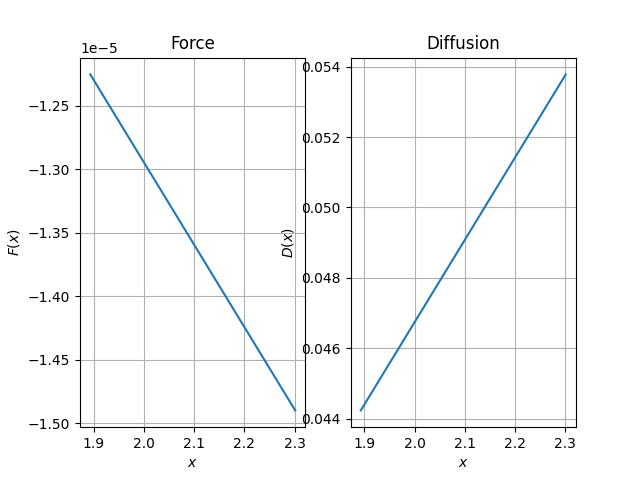

Note
Go to the end to download the full example code
Overdamped Langevin Estimation¶
How to run a simple estimation
/home/runner/work/folie/folie/folie/estimation/transitionDensity.py:20: RuntimeWarning: invalid value encountered in log
ll = -0.5 * ((xt.ravel() - E) ** 2 / V) - 0.5 * np.log(np.sqrt(2 * np.pi) * V)
import numpy as np
import matplotlib.pyplot as plt
import folie as fl
# Trouver comment on rentre les données
trj = np.loadtxt("datasets/example_2d.trj")
data = fl.Trajectories(dt=trj[1, 0] - trj[0, 0])
for i in range(1, trj.shape[1]):
data.append(trj[:, i : i + 1])
fun = fl.functions.Linear()
model = fl.models.Overdamped(fun)
estimator = fl.LikelihoodEstimator(fl.EulerDensity(model))
model = estimator.fit_fetch(data)
# To find a correct parametrization of the space
bins = np.histogram_bin_edges(data[0]["x"], bins=15)
xfa = (bins[1:] + bins[:-1]) / 2.0
fig, axs = plt.subplots(1, 2)
# Force plot
axs[0].set_title("Force")
axs[0].set_xlabel("$x$")
axs[0].set_ylabel("$F(x)$")
axs[0].grid()
axs[0].plot(xfa, model.force(xfa.reshape(-1, 1)))
# Diffusion plot
axs[1].set_title("Diffusion")
axs[1].grid()
axs[1].plot(xfa, model.diffusion(xfa.reshape(-1, 1)))
axs[1].set_xlabel("$x$")
axs[1].set_ylabel("$D(x)$")
plt.show()
Total running time of the script: (0 minutes 2.533 seconds)